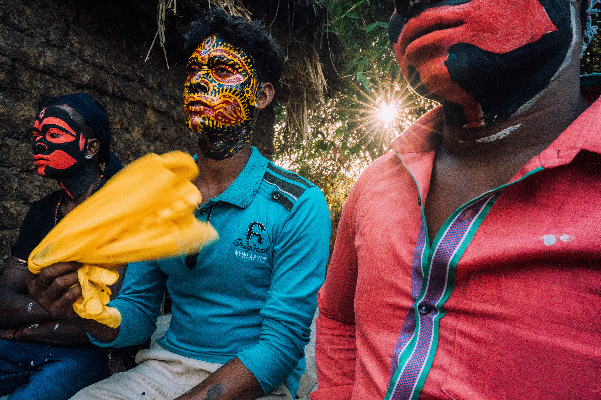
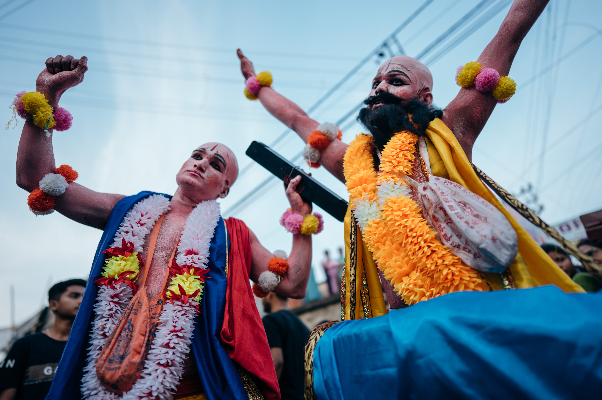
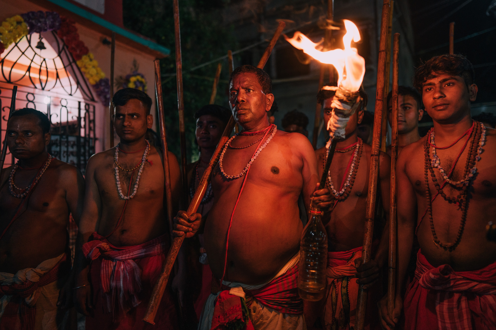
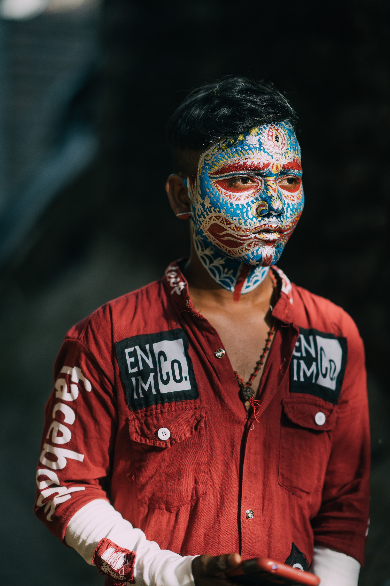
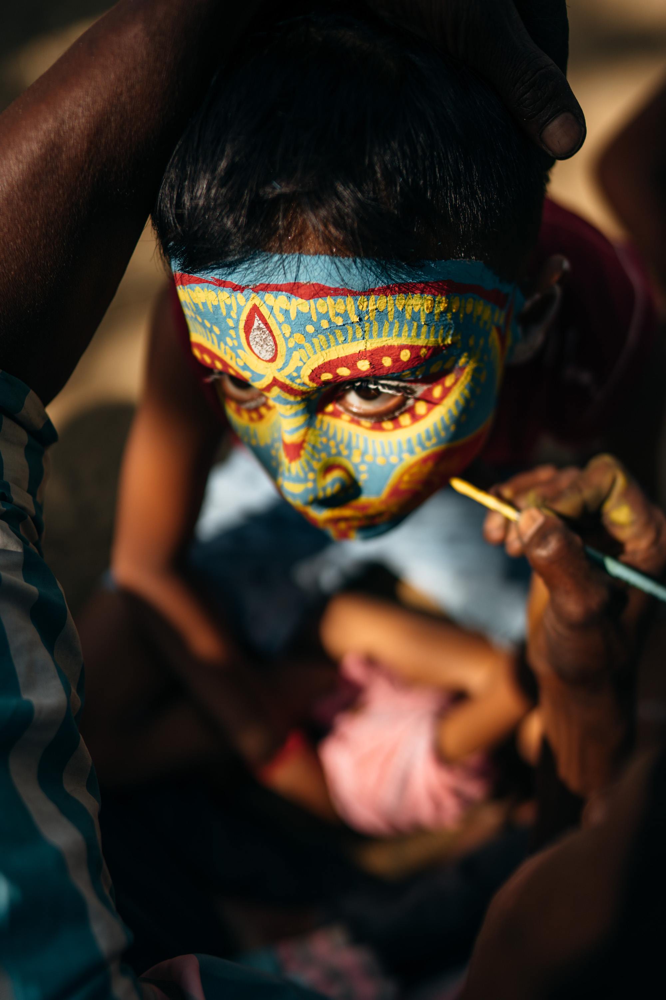
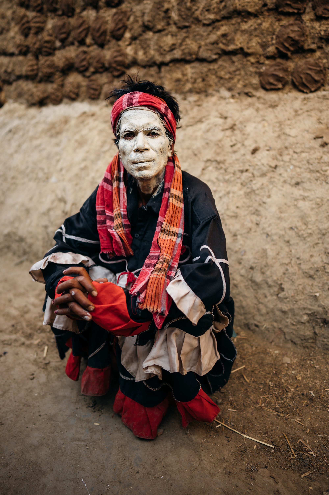

"The soul of Kolkata resides in its streets, where every corner has a
story to tell and Gajan Festival is where the divine and the earthly
intertwine in a mystical celebration."
Kolkata X Gajan Photography Tour, a remarkable journey that delves
into the heart and soul of Kolkata's vibrant festivities. Embark on
a mesmerising adventure that combines the art of photography with
the pulsating energy of one of India's most culturally rich cities.

Kolkata, often referred to as the "City of Joy," is renowned for its
exuberant celebrations and deep-rooted traditions. Among its many
vibrant festivals, Gajan holds a special place. Gajan is a unique
Hindu festival that showcases a blend of devotion, artistic
expressions, and exhilarating rituals. It is a time when the city
comes alive with captivating processions, stunning performances, and
fervent devotion.

Our Kolkata X Gajan Photography Tour provides a remarkable opportunity
for photographers of all levels to capture the essence and beauty of
the awe-inspiring streets of Kolkata and Gajan festival. Led by
experienced and passionate photographer Shivam, this tour combines
expert guidance with immersive cultural experiences, ensuring you not
only capture incredible photographs but also gain a deep understanding
of the street photography potential of Kolkata and the festival's
significance.
Throughout the tour, you will witness the devoutness of the
participants as they engage in age-old rituals and seek blessings from
the deities. From the captivating processions through the streets to
the mesmerising performances that showcase the region's rich cultural
heritage, you will have the privilege to document the vibrant colours,
emotions, and traditions that define Gajan.

Our carefully curated itinerary includes a photography tour of most
photogenic spots of Kolkata along with visits to key Gajan celebration
sites, allowing you to capture candid moments of devotion, cultural
expressions, and the spirit of unity that permeates the festival.
Whether it's the hustling bustling streets, daily chores of people on
streets, enchanting dance forms, intricate rituals, or the sheer
energy of the participants, every click of your camera will tell a
story and preserve the magic of Gajan for eternity.
Furthermore, Shivam will provide valuable tips and techniques to
enhance your skills, ensuring that you make the most of every
photographic opportunity. Whether you are a beginner eager to learn
the ropes or an experienced photographer seeking new perspectives,
this tour offers a perfect blend of creativity, cultural immersion,
and personal growth.
Who can join this tour:
This tour is suitable for photographers of all levels and photography
enthusiasts who are passionate about capturing the essence of street
photography, documentary photography and cultural celebrations. Basic
knowledge of photography techniques and equipment is recommended to
fully benefit from the tour.



Itinerary for Kolkata X Gajan Festival Photography Tour
Arrival - Day 0
Arrival at Netaji Subhas Chandra Bose International Airport
Transfer to our heritage hotel in Kolkata
Explore the bustling streets, vibrant markets, chai stalls,
and eateries near the hotel
Overnight stay in Kolkata
Day 1
Witness the mesmerising sunrise from the ghats along the
Hooghly River
Observe priests and devotees offering prayers and bathing in
the sacred waters
Capture reflections and activities unfolding as the tide
recedes
Visit the charming Lebutalla neighbourhood in the evening.
Photograph the hand-pulled rickshaws and elegant backdrops of
its streets
Immerse yourself in the local ambiance and capture the essence
of daily life
Overnight stay in Kolkata
Day 2
Visit the Mullick Ghat Flower Market
Capture the kaleidoscope of colours as vibrant flowers are
bought and sold
Experience the interplay of light and shadow under the bridges
Photograph the bustling market scenes and the dedicated
vendors
Explore the metal market, witness workers carrying metalware,
and play with light and shadow
Photograph the resilience and labour of these individuals
Explore the Kalighat neighbourhood in the evening.
Day 3
Streets of Burrabazar Area, Metal market, vibes of fruit
market will give you a perfect opportunity to capture the
essence of amazing labours in these areas.
Kumortuli, the bustling neighbourhood where artisans are
working diligently to complete the clay idols for the
festival.
Day 4
Morning visit to the outdoor wrestling hall near the Howrah
Bridge
Capture environmental portraits and dynamic wrestling shots
Witness impressive displays of strength against the iconic
backdrop
Evening visit Kumartoli neighbourhood, it is full of potters
and clay sculptors
Observe the artists at work as they bring Hindu deities to
life
Witness the process of idol-making and the dedication of the
artisans
Photograph the transformation of clay into beautiful
sculptures
Immerse yourself in the artistic creativity and symbolism of
the area
Day 5
Drive to Bardhaman district and photograph famous face
paintings done as part of the festival. Return to Kolkata and
spend the night at the hotel.
Day 6
Travel to Murshidabad district. Arrive in the evening and
rest. Prepare for shooting the Gajan festival rituals,
processions, and ceremonies during the night.
Day 7
Capture the Gajan festival's rituals and ceremonies during the
night. If energy permits, explore local villages during the
day.
Day 8
Witness and photograph the mesmerising rituals of the Charak
Festival, including the Charak dance and Charak Chhinnam.
Goodbye Dinner
Day 9
Back to home. You can checkout at 12 noon as your room will be
booked till 15th 12 noon or extend your stay as per flight
convenience on your expense if required.
Disclaimer : Private car and driver will be provided throughout
the festival days for convenient travel between locations. The
itinerary is subject to change based on local conditions and
availability. The focus of this photography tour is to capture the
intensity of Puja preparations, the vibrant Pandals, and various
cultural experiences associated with the Durga Puja festival.
Tour Inclusions
Hotel Room (The Elgin Fairlawn or similar) accommodation in
Kolkata (The Elgin Fairlawn or similar). Accommodation is at
single occupancy you have your own room with a private ensuite.
Arrival and departure airport transfers in Kolkata.
Orientation Dinner, mineral water availability everytime, local
snacks.
Mini-bus/ Van transport in Kolkata or private car.
Photography mentoring/guidance in street, documentary and travel
photography by Shivam.
Local assistant/guide/fixer in Kolkata.
Gratuities
Tour Exclusions
Comprehensive travel insurance. All participants are required to
take comprehensive travel insurance for this tour.
Flight to Kolkata.
Entry visa to India (around USD$25 for an eVisa if you're an
Australian).
Photographic equipment. You will need to bring/supply your own
cameras, lenses, batteries, filters, memory cards and so on. A
tripod is not as such required for this tour but if you love to
use them, you can bring them.
Insurance for your photographic equipment while on tour.
Travel vaccinations.
Alcoholic drinks.
All personal expenses and fees, including laundry, medication,
incidental meals and snacks, minibar etc.
Any transport and fees outside of the tour itinerary.
An India sim card is available for AUD$25, which can be purchased
on your behalf. Please advise when making a reservation if you
would like to take up this option. The local sim card will allow
you to connect to the Internet and make voice/video calls over IP.
The card offers around 2GB of mobile data usage per day.